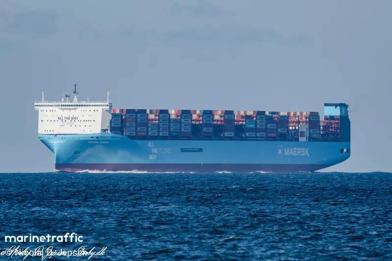

Tag : navigation
10 articles avec ce tag.

beijing yallah
06/05/2026
Sortie famille — Bandol AR
24/07/2025

Navigation de nuit — Détroit de Messine
23/06/2025
Navigation de nuit — Sardaigne → Sicile
22/06/2025

Maddalena — départ vers la Sicile
13/06/2025
Traversée Saint-Cyr → Bonifacio
08/06/2025

Bonifacio — les falaises de calcaire
08/06/2025
Porquerolles — vent de 25 noeuds
18/05/2025
Arrivée à Malte
19/04/2025
Une entrée pour voir comment ça fonctionne.
18/04/2025